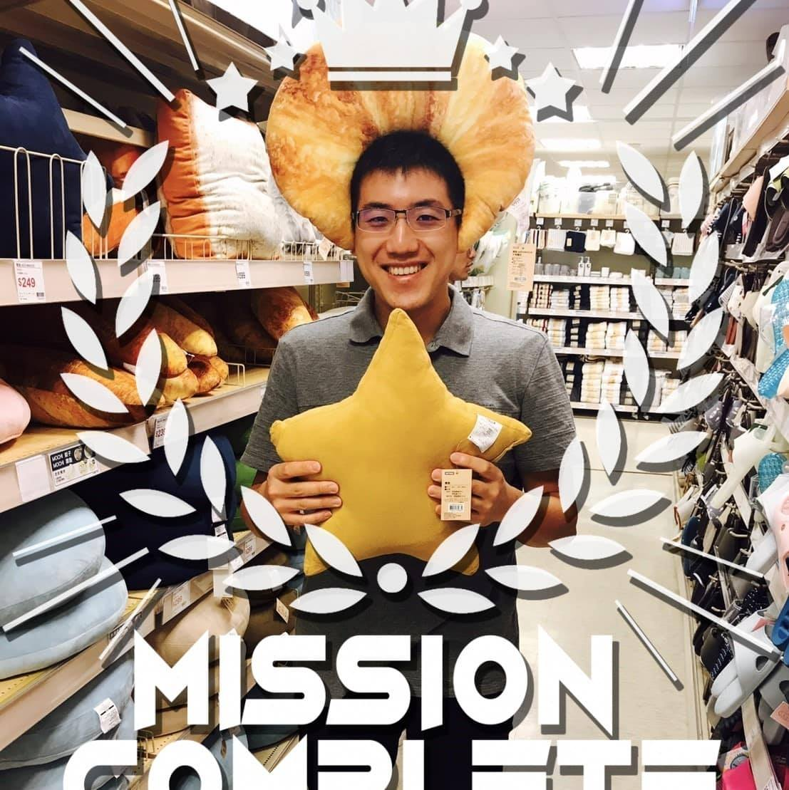
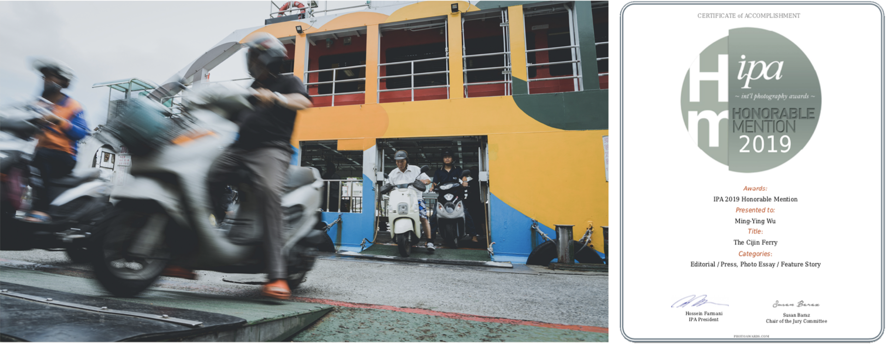
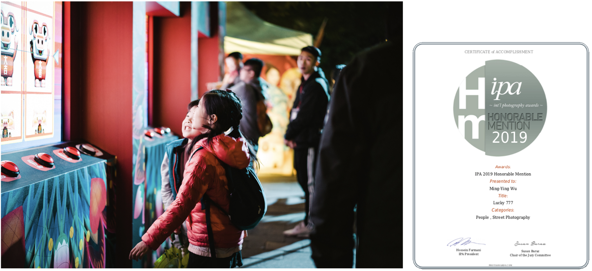
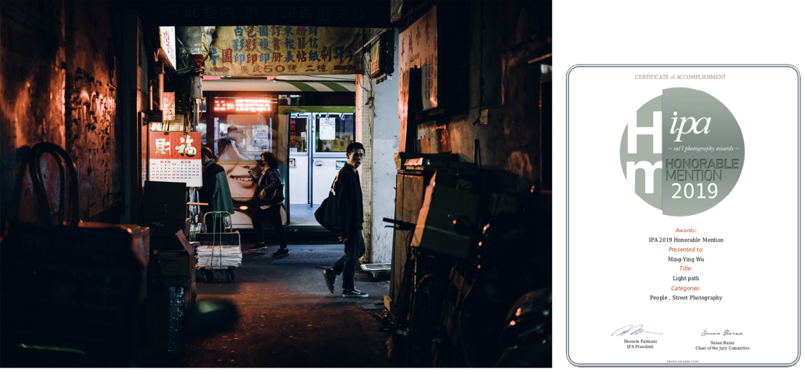
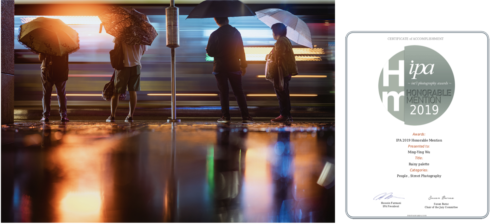
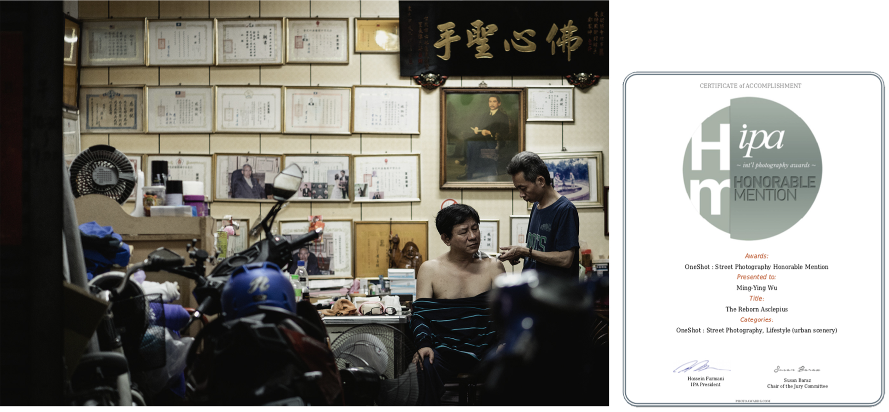
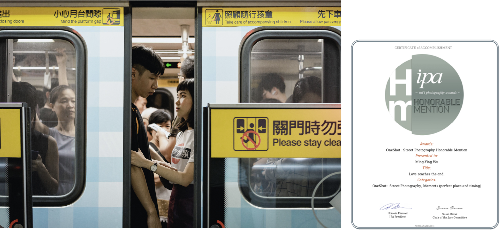
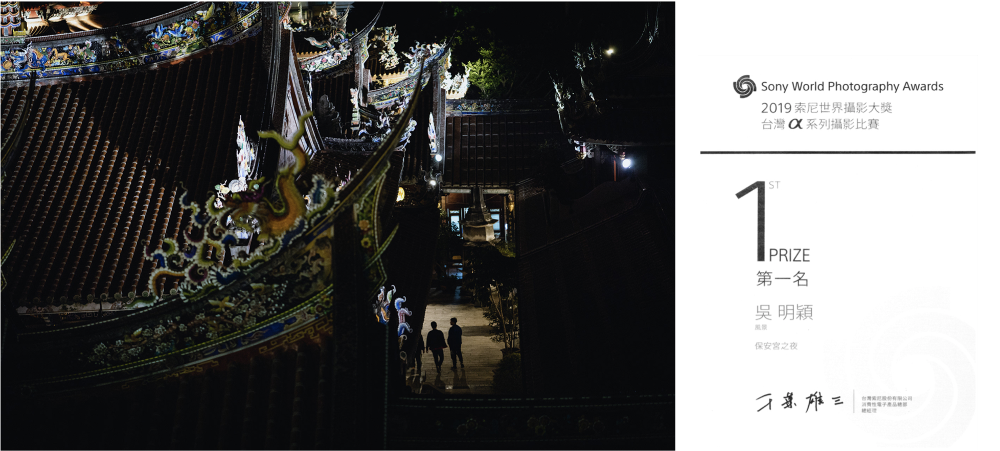
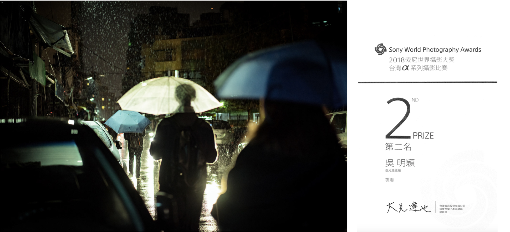

簡介
吳明穎
台北人．軟體工程師
喜歡自行車運動與攝影

事蹟
CHROMATIC PHOTO AWARDS
- Categories:Landscapes Title:Turtles In Yilan (Honorable Mention)
- Categories:Travel Title:Light Path (Honorable Mention)
- Categories:Still Life Title:Shadow Game (Honorable Mention)


International Photography Awards
- Categories:Editorial/Pres,PhotoEsay/FeatureStory Title:TheCijinFery (Honorable Mention) 
- Categories:People,StreetPhotography Title:Lucky777 (Honorable Mention) 
- Categories:People,StreetPhotography Title:Lightpath (Honorable Mention) 
- Categories:People,StreetPhotography Title:Rainypalete (Honorable Mention) 
- Categories:Lifestyle(urbanscenery) Title:TheRebornAsclepius (Honorable Mention) 
- Categories:Moments(perfectplaceandtiming) Title:Lovereachestheend (Honorable Mention) 
- Categories:Editorial/Press,Contemporary Issues Title:The Siege (Honorable Mention)

Sony World Photography Awards
- Categories:風景類組第一名 Title:保安宮之夜 
- Categories:低光源類組第二名 Title:夜雨 
其他成就紀錄
{kind=link}
{kind=link}
興趣活動
{kind=link}
{kind=link}
{kind=link}
{kind=link}
{kind=link}
{kind=link}
{kind=link}
{kind=link}
© Presented by : Ming-Ying Wu (Jan, 2023).